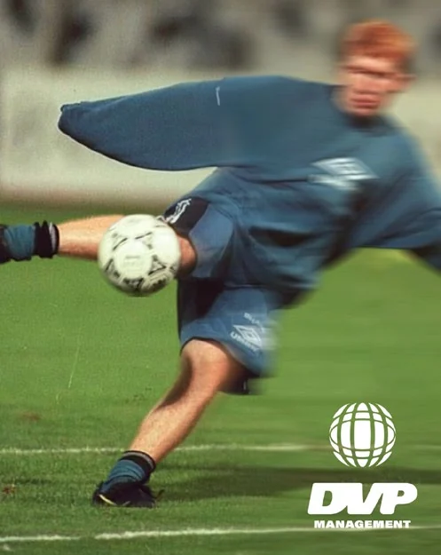

La necesidad que se va a trabajar
Identificar contigo el objetivo de apoyo y el área de especialidad correspondiente.
 Hablemos ↗
Hablemos ↗Cuerpo. Cabeza. Fútbol. DVP Wellness coordina psicología deportiva, nutrición personalizada, preparación física y entrenamiento técnico individual. Los módulos complementan el trabajo de tu club y se eligen según tu momento y tus necesidades. Cada atención y cada plan se acuerdan con el especialista correspondiente.
Hablar de DVP Wellness ↗
El acompañamiento puede centrarse en una necesidad específica o reunir distintos módulos. La función de DVP es organizar contigo el apoyo que eliges activar, manteniendo clara la diferencia entre análisis del juego, preparación individual y atención al bienestar.
En nutrición, el alcance contempla un plan personalizado según tu posición, calendario y necesidades deportivas. En psicología, el acompañamiento aborda las exigencias de competir y el bienestar del jugador. La preparación física y el entrenamiento técnico se orientan a objetivos individuales.
La página describe servicios, no prescribe dietas, rutinas ni tratamientos. Para decidir qué atención corresponde se necesita una valoración individual. El acompañamiento complementario no sustituye al equipo médico ni a los profesionales responsables de tu club.
Identificar contigo el objetivo de apoyo y el área de especialidad correspondiente.
Acordar la atención y el plan para tu caso, en lugar de aplicar una rutina o una dieta genéricas.
Organizar el módulo elegido para complementar tu trabajo deportivo y adaptarlo a tus circunstancias.
No. Son opcionales y se activan según lo que tú y los especialistas definan para tu caso.
Los módulos de especialistas se cotizan de forma independiente antes de activarse. La página de Football Management detalla el alcance de la representación.
No. Analytics revisa el rendimiento a partir del partido y su contexto. Wellness coordina el apoyo de especialistas en psicología, nutrición y preparación física y técnica.